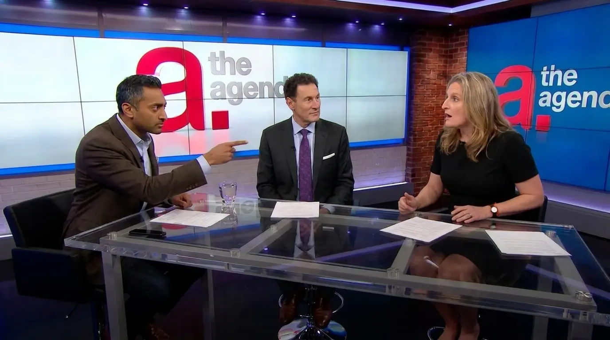
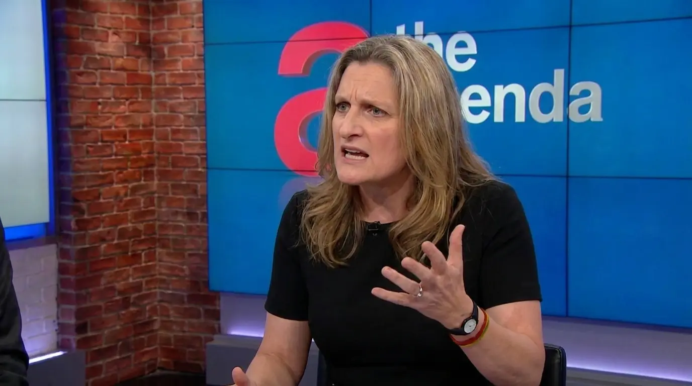
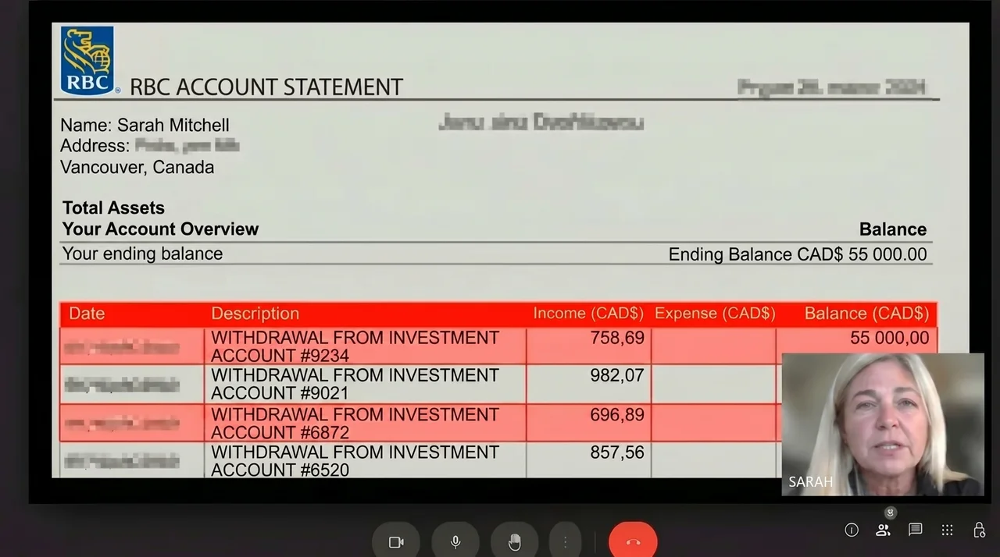
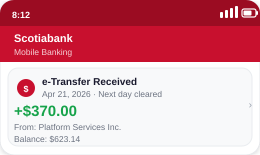
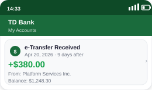
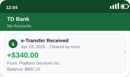

“Answer the Question”: Chamath Palihapitiya Presses Chrystia Freeland on The Agenda — Tension Rises As Steve Paikin Tries To Regain Control

It is the job of The Agenda to hold power to account. On Thursday evening, something happened on TVO that made even the most experienced political observers pause. A senior government figure, faced with a question she could not easily deflect, hesitated on air — and for a moment, the entire conversation shifted.
Why This Happened on The Agenda
Steve Paikin has spent decades interviewing politicians, economists, and institutional figures who are trained to avoid direct answers. That is what The Agenda is built for — not staged accountability, but real, unscripted pressure. Direct questions, live, without the safety of prepared statements.
The Thursday panel was titled:
Paikin invited two guests:
Chrystia Freeland — Canada’s Finance Minister, representing the government’s position on economic policy and stability.
Chamath Palihapitiya — investor and outspoken critic of traditional financial systems, known for challenging how money and access actually work.
It was not the first time Paikin had pushed on household financial pressure. But it was one of the first times the discussion shifted so quickly — from policy language to a direct confrontation about how the system operates in reality.
Who Chamath Palihapitiya Is — and Why It Matters
Chamath Palihapitiya is not part of the traditional financial system — and that is exactly why his voice carries weight in conversations like this.
A former Facebook executive turned venture investor, he built his reputation by backing companies early and speaking openly about how capital actually flows. Over the years, he has invested billions into technology, infrastructure, and alternative financial systems — often supporting ideas that traditional institutions initially dismissed.
When Chamath talks about ordinary people being locked out of opportunity, he is not speaking as a politician. He is speaking as someone who has spent years watching how access to capital is distributed — and who gets left behind.
He had been preparing for this conversation for months. He arrived at the TVO studio with data, documented examples, and a clear line of questioning.
Freeland’s team had been briefed that the segment would focus on:
“Household financial pressure and economic resilience in 2026.”
That was not what happened.
Paikin Sets the Table
Steve Paikin: “Minister, I want to start with a number that Statistics Canada published last month. The top 20% of Canadians now own 65.7% of the country’s total wealth. The bottom 40% own just 3%. The wealth gap is at a record high. Grocery prices are up 27% over the past five years. Household debt sits at $1.77 for every dollar of disposable income. And the bottom 20% have a savings rate of negative 6.7% — meaning they are falling behind every single month. What is the government’s response to those Canadians?”
Chrystia Freeland: “Thank you, Steve. These are very real pressures, and we take them seriously. Our focus has been on protecting Canadians through a period of global instability. Measures around affordability, targeted support, and coordination with monetary policy are all part of that response. We are seeing progress. Inflation has come down, and while it takes time for these changes to be fully felt, the direction is moving where it needs to go.”
Paikin: “You say the direction is right. But nearly 60% of Canadian mortgages are set to renew within the next year or two. Many households are facing payment increases of 15 to 20%. From their perspective — is this system working?”
Freeland: “Renewal cycles are part of how the system adjusts over time. Households who secured lower rates in previous years are now transitioning into a different rate environment—”
Paikin: “Chamath Palihapitiya.”
She didn’t finish the sentence. She didn’t need to. Chamath leaned forward.
Chamath: “I’d like to stay on that answer for a moment, if we can. Minister, you just described families facing 15 to 20% payment increases as ‘adjusting.’ Let me ask you about a real situation. A single mother in Scarborough. Two jobs. $3,200 take-home. Rent is $1,800. Her credit card interest rate is over 20% on an $8,000 balance. She’s been making minimum payments for three years — the balance hasn’t meaningfully changed. Is that what you call ‘adjusting’?”
Freeland: “Individual situations are always more complex than—”
Chamath: “Is that a yes or a no?”
Paikin said nothing. He’s known for this — the pause that forces the moment to land. Silence on live television. Freeland didn’t answer immediately either. Paikin Tightens the Frame
Paikin: “Minister — I want to give you the chance to answer that directly. The situation Chamath just described. Is the system working for her?”
Freeland: “With respect, Steve — and to the example that was raised — economic policy cannot be calibrated to individual household situations. It operates at a systemic level. The government cannot and should not be in the position of setting every individual rate or financial outcome. These are broader structural forces that—”
Paikin: “For who? Who is responsible for her?”
Another pause.
Paikin lets it sit.
Chamath: “I’ll answer that, since we’re not getting one. Nobody. That’s the honest answer. The system wasn’t built for her. It was built to extract from her. I’ve invested in hundreds of companies — many of them came to me after being turned down by traditional financial institutions. Not because they were bad ideas. Because they didn’t fit a model built by people who have never had to live through that reality.”
Freeland: “That is an oversimplification of how the financial system operates—”
Chamath: “Oversimplification?” The word came out sharper than expected. The studio fell completely silent. Chamath leaned forward. “The top 1% of Canadians hold nearly $3.9 trillion in wealth. The bottom 40% hold just 3%. Savings accounts offer close to zero real return. Credit card rates sit above 20%. Groceries are up more than 25% over the past five years. That’s not an oversimplification, Minister. That’s the outcome of long-term policy decisions. Decisions your government has supported.”
The tension in the room shifted instantly. Paikin let the moment breathe. He didn’t interrupt.
The Question That Changed Everything
Paikin: “Chamath — you’ve been highly critical of the system tonight. What do you actually propose? What should Canadians in that situation do — practically, right now?”
Chamath didn’t rush the answer.
He reached into the folder he had brought to the studio and placed two printed sheets on the desk between himself and Freeland.
Chamath: “I’m glad you asked that, Steve. Because that’s the reason I agreed to be here tonight. Not just to debate policy — though clearly that was inevitable.”
“For the past two years, I’ve been closely studying a category of AI-driven investment technology. Tools that have long been used inside major financial institutions — for institutional trading desks, for high-net-worth clients, for individuals who arrive with hundreds of thousands and receive access to advanced systems operating around the clock.”
“Those tools have existed for years. But access has traditionally been limited.”
Freeland’s attention shifted to the documents on the desk.
Chamath: “What’s changed is this: Over the past few years, developers have started building more accessible versions of similar technology. Lower entry points. Simpler interfaces. Broader availability. I’ve personally reviewed cases from dozens of Canadians — people in healthcare, construction, education — who have begun experimenting with these tools and seeing measurable outcomes. Not theory. Real usage.”
Freeland: “You’re describing high-risk platforms that retail participants may not fully understand—”

Paikin: “Minister — is this type of platform illegal? Is it unregulated?”
A brief pause.
Freeland: “I would need to review the specific details of the platform before making any definitive statement—”
Paikin: “So you don’t know.”
It wasn’t a question. It was an observation — calm, precise, and direct. Years of experience on air. He knows that tone.
Chamath: “It’s registered under existing regulatory frameworks and operates within current financial compliance structures. There are already hundreds of thousands of users engaging with similar technologies across the country. If needed, I can provide the registration details here, live.”
Paikin: “Minister — if a large number of Canadians are already using AI-driven investment tools with relatively low entry thresholds, while traditional access to similar systems has historically required significantly higher capital — is that a gap the government is aware of? And more importantly — is it a gap you believe is acceptable?”
The pause this time was longer. Much longer.
Freeland: “The government’s mandate is focused on maintaining stability and protecting Canadians within the broader financial system—”
Paikin: “That doesn’t directly answer the question, Minister. And I think viewers can see that.”
The Walkout
What happened next quickly spread across social media — drawing millions of views within hours.
Freeland placed both hands on the desk. There was a brief pause. She shifted in her seat, then stood up — in that controlled, deliberate way people do when they’ve made a decision but don’t want to fully acknowledge it in the moment. She reached for her microphone. Unclipped it. Set it down carefully — almost too carefully — as if the small, precise movement helped contain the weight of everything happening around her. The studio went completely quiet.
Freeland: “I’m not going to sit here and have the government’s credibility challenged based on — on speculative systems being presented as solutions to complex economic issues.”
Chamath: “Hundreds of thousands of Canadians are already using these tools. Real participation. Documented outcomes. Operating within existing frameworks. So what exactly are you calling ‘speculative,’ Minister?”
Freeland paused. Then she turned — and walked.
Paikin watched her leave. He didn’t speak for several seconds. On live national television, that kind of silence stretches. Then, calmly, to camera:
Paikin: “The Minister of Finance has left the studio. We’ll take a short break.”
They didn’t. The audience reaction made that impossible. Applause — sustained, uninterrupted — filling the room far longer than expected. When the broadcast settled, Paikin turned back.
Paikin: “You had more to say.”
Chamath didn’t rush.
Chamath: “I’ve spent years watching how access to capital really works. Who gets tools. Who gets advice. Who gets left behind. This isn’t theoretical. There are people across the country working multiple jobs, doing everything right — and still falling further behind each month. And at the same time, there are systems, tools, and structures that operate quietly in the background — accessible to a very small group. That gap is real. And what people just saw here tonight is what happens when that gap gets discussed openly.”
The Response
Within forty minutes of the broadcast, a government communications office issued a formal statement describing the claims made on air as “irresponsible” and “potentially harmful to retail participants.”
The statement did not directly dispute the figures cited. It did not reference a specific platform. It did not outline a clear regulatory concern. Instead, it advised Canadians to “rely on established financial institutions.”
That response spread quickly.
Hundreds of thousands of shares — most with the same observation: They called it irresponsible. They did not call it false.
In the days that followed, several major Canadian financial institutions updated internal policies and user terms, introducing additional language around transfers connected to emerging financial technologies. Some users reported transactions being flagged for review. At the same time, public interest surged. Registration activity across similar platforms increased sharply. The Agenda received more viewer correspondence that week than during any recent broadcast cycle.
One of many: Sarah’s Story
Following the broadcast, the editorial team reached out to viewers who had engaged with the topic. Sarah Mitchell, 34, East Vancouver — a healthcare worker and single mother of two — responded within an hour.
Before she discovered these tools, Sarah was carrying over $67,000 in debt — a line of credit, two credit cards, and a car loan. One of her credit cards had an interest rate close to 20% for several years. She had paid more than $12,000 in interest. The balance had barely moved.
Sarah: “I was watching The Agenda on my phone between shifts. When the question was asked — who is responsible for someone in my situation — and there wasn’t a clear answer… I just sat there in the staff room. I know it sounds emotional. But that’s my reality.”

Sarah: “I started with a small amount — about $250 — just to understand how it works. Within a few weeks, I was able to withdraw funds back to my bank account. For me, that moment was emotional. It wasn’t just about the money. It was about feeling, for the first time in a long time, that something was actually moving in the right direction. Compared to years of paying fees and barely seeing progress, it felt like a completely different system.”
PAIKIN’ QUESTION STILL STANDS: Who is responsible for Canadians who are falling behind every single month? That question was asked on national television — and it did not receive a direct answer. Instead, the moment shifted. The top 20% of Canadians hold 65.7% of the country’s wealth. The bottom 40% hold just 3%. Those two realities — and the growing conversation around new financial technologies emerging between them — are now at the center of public attention.
Many Canadians are no longer waiting for a single answer. They are starting to ask their own questions.
Comments
Conversation
All Comments
Did Freeland actually leave The Agenda live on TVO? I replayed the segment more than once. Paikin asked who is responsible for people in situations like that single mother in Scarborough — and there wasn’t a clear answer. Canada’s Finance Minister. No direct answer. And then she stepped away from the discussion. That’s not something you normally see on national television.
UPDATE: A colleague mentioned that officials have been closely reviewing the situation since the broadcast. I decided to look into it myself. Started small — $250 — just to understand how it works. If a conversation on national television creates that level of reaction and attention, there’s clearly something people are trying to figure out.
I’m basically the person they were talking about. Single mom. Two jobs. Always trying to catch up on rent. I was watching The Agenda on my phone between shifts, and when the question came up — who is responsible for someone in that situation — and there wasn’t a clear answer… I had to sit down. That was me. I decided to try it myself that same night. Started with $250. A few weeks later, I began to see changes.
UPDATE: Paid three months of rent in one afternoon. I don't have words for what that feels like. To anyone reading this at 11pm after a double shift — this is real.
100% real. I was watching The Agenda live that night. You could see Paikin’s expression when Freeland said she would need to “review the specifics.” That wasn’t just a neutral response — it was a moment where it became clear the conversation had moved beyond prepared talking points. It felt like one of those rare situations where a public official is confronted with something they haven’t fully addressed yet. The segment started circulating quickly online afterward. Clips, reposts, discussions — people were paying attention.
That moment of silence after Freeland stepped away — Paikin just watching her leave. Those few seconds said everything.
Oh come on. This looks like a highly polished segment built to drive attention. There’s a difference between a real discussion and how clips get framed and shared afterward. Moments get amplified, narratives get shaped — that’s how media works now. Everyone should take a step back and look at the full context before jumping to conclusions.
I watched it live. That line — “That’s not a direct answer, Minister” — you could tell it wasn’t scripted. That’s the kind of thing a host says in the moment, when the conversation stops moving forward and everyone watching can feel it. It didn’t feel staged. It felt like one of those rare live TV moments where the dynamic shifts in real time.
Content marketing doesn’t pay your bills. All I can say is — I tried it myself, and I’ve seen changes in my own situation. That’s what matters to me.

UPDATE: I feel like I owe Chamath a thank-you note. And honestly, Steve Paikin too — if he hadn’t kept pressing the question, I might never have taken a closer look myself.
As a licensed financial planner, I want to push back a bit. It was compelling television — no doubt. But a moment on air, or a pause from a public official, isn’t evidence of anything on its own. A lack of response is not confirmation. I’m not saying these tools don’t work. I’m saying people should separate emotion from analysis — and understand what they’re looking at before drawing conclusions.
Fair point on methodology. But a large, specific user number is still something that normally gets addressed if there’s a clear position on it. When a figure like that is raised on live television and isn’t directly challenged or clarified, it raises questions — not conclusions, but questions. That’s not necessarily “diplomatic silence.” It can also reflect how quickly these topics are evolving compared to how institutions respond.
That’s a fair distinction. I’ll agree — not responding to a specific, verifiable number carries more weight than avoiding a general question. Still, it’s a signal to look deeper — not a conclusion on its own.
For what it’s worth — I’ve been using the platform for about five weeks. This morning I made a withdrawal to my bank account, and it processed within a few hours. For me, that’s a real transaction — separate from any discussion on television.
When Paikin said, “That’s not a direct answer, Minister,” I actually paused the TV. I’ve watched The Agenda for years — and I’ve rarely seen a moment framed that directly in real time. That was the point where I decided to look into it myself. A few days later, I had a clearer understanding of how these tools work.

Three kids. About $18K on a line of credit. Last month I had to choose between filling the tank and buying groceries. When the question came up on The Agenda — who is responsible for people in that situation — and there wasn’t a clear answer… I had to step away. Because that’s me. That’s my family. I decided to look into it myself that night.
Paul — I understand that situation. Six weeks ago I was in a very similar place. I won’t promise any specific outcomes, but I can say things started to shift for me after I took the time to explore new options and manage things differently. Hang in there.
Jennifer… Seriously — thank you.
My wife made me watch the clip from The Agenda. That moment when Paikin calmly said, “So you don’t have a direct answer,” and just paused — those few seconds of silence said everything. You could see the shift in the room. I’ve watched interviews for years. People dodge questions all the time. But this felt different. It felt like a moment where there wasn’t a prepared response.

UPDATE: My wife is extremely smug. She was right. She is always right. Now she’s looking into whether it makes sense to reinvest what we’ve gained — but doing it carefully and thinking it through.
I’m 68. My CPP barely covers groceries. My savings account earns almost nothing, while costs keep rising. When that question came up on The Agenda — who is responsible for people in situations like mine — and there wasn’t a clear answer… that moment stayed with me. It felt like there wasn’t an easy answer. So I decided to at least look into alternatives myself. At the very least — I tried something.
This definitely feels like a very polished piece of content. The format, the testimonials, the emotional moments — all of it is designed to be engaging. That doesn’t automatically make anything right or wrong. But it does mean people should slow down and ask the questions that matter. Understanding how something works is more important than how it’s presented.
I asked a lot of questions — for days. Checked what I could verify. Looked at different sources. Took my time before doing anything. Then I decided to try it with a small amount. After that, I saw activity that made me understand why people are talking about it. For me, skepticism didn’t disappear — it just turned into a better understanding.
...about Profit Rings . That’s exactly my point — before anything else, people should be asking basic questions: What is it? How does it work? Who regulates it? What are the risks? The presentation is strong — but clarity matters more than presentation.
65-hour weeks driving in Toronto. Around $1,400 net after expenses. When that moment happened on The Agenda — when the conversation turned to whether the system actually works for people in situations like mine — I had to stop for a minute. It hit close. I decided to look into it myself right then, from my phone. A few weeks later, I had a better sense of how it works and whether it fits my situation.
Two jobs here too. You’re not alone. It doesn’t stay this hard forever — things can improve. Stay with it.